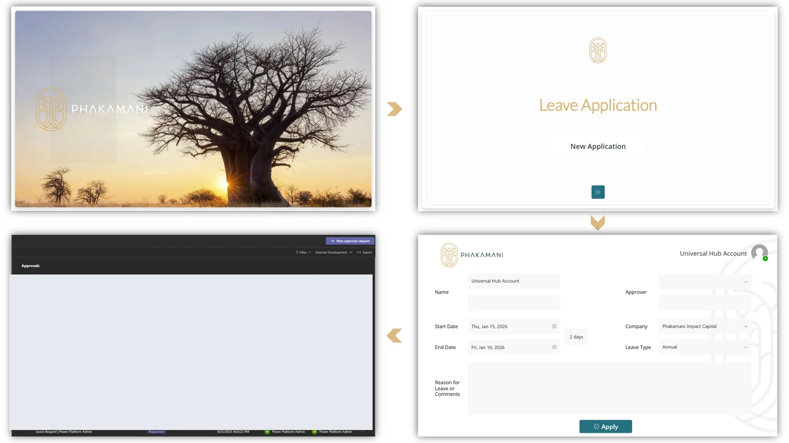
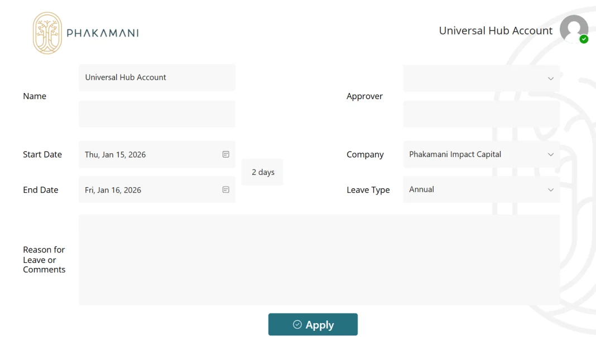

Business apps
Group Leave App
Employees request leave in Power Apps. Managers approve it in Teams, with SharePoint providing the underlying records.

Context
Several companies in the group of companies relied on a paper-based leave application process, which required printing, manual approvals, and Excel data entry, resulting in higher costs, inefficiencies, and delayed processing.
Objective
I went ahead with digitizing the leave application workflow to streamline approvals, reduce costs, and improve efficiency while ensuring no additional licensing expenses.
My contribution
I built a Power Apps leave application that allows employees to select their company, submit leave requests, and choose an approver from a list, with automated approval workflows routed to HR or the line manager via Teams; the solution runs entirely on SharePoint, avoiding Dataverse licensing costs.
Outcome
The solution eliminated paper and printing costs, retained revenue previously spent on materials, streamlined leave approvals, and provided a fully automated, efficient, and scalable workflow for all companies in the group.
